Витрина на пакета mascot/. Всичко тук са същите файлове, които продуктите ползват —
страницата не е отделно копие. Виж README.md за вграждане в Next/React и в EJS/статичен сайт.

full — герой-кадър, ореол, мехурчетаmedium — без филтри, за печат/векторизацияicon — плътни цветове, дебели рамкиТестът, който решава дали иконата е добра: чете ли се като маскот, когато е висока колкото един ред текст.
Формата е една, цветът е променлива. Задай --jm-* на родителя — SVG-то не се пипа.
Работи само при вграден SVG (React компонента или <%- include %> в
EJS): през <img> външният CSS изобщо не стига до документа на картинката и се
вижда падащата стойност от var(--jm-…, #HEX) — точно затова всеки цвят носи fallback.
<JellyMascot detail="full" style={{ "--jm-neon": "#0DB6A8", "--jm-olive": "#2AE7D8" }} />
/* или на ниво секция, за вграден SVG: */
.brand-teal { --jm-neon: #0DB6A8; --jm-olive: #2AE7D8; }
Класът .jm-animated (от tokens.css) добавя полюшване, пулс на глоуто, мигане
и махане на пискюла. Нищо не мига по-бързо от 3 Hz, а при
prefers-reduced-motion: reduce движението е нула — виж tokens.css.